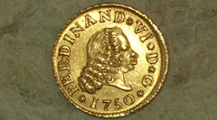
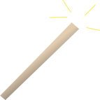
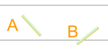

Activity: Buffon's Needle
How to estimate Pi by dropping a match.
A few hundred years ago people enjoyed betting on coins tossed on to the floor: would the coin cross a line or not?

A man (Georges-Louis Leclerc, the Count of Buffon) started thinking about this and worked out the probability.
It is called "Buffon's Needle" in his honor.
Now it is your turn to have a go!
You will need:
|  |
A match, with the head cut off. (You can use a needle, but be careful!) |
|
A sheet of paper with lines 50 mm apart. |
{kind=link}
Steps
- Measure the spacing of your lines (it may not print at exactly 50mm): ____ mm
- Measure the length of your match (must be less than the line spacing): ____ mm
- Make sure your sheet of paper is on a flat surface such as a table top or the floor.
- From a height of about 5cm, drop the match onto the paper and record whether it lands:
A: Not touching a line
B: Touching or crossing a line

The exact height from which you drop the match is not important, but don't drop it so close to the paper that you are cheating!
If the match rolls completely off the paper, then do not count that turn.
100 Times
Now we will drop the match 100 times, but first ...
... what percentage do you think will land A, or B?
Make a guess (estimate) before you begin the experiment:
| Your Guess for "A" (%): | |
| Your Guess for "B" (%): |
OK let's begin.
Drop the match 100 times and record A (does not touch a grid line) or B (touches or crosses a grid line) using Tally Marks:
| match lands | Tally | Frequency | Percentage |
|
A (no touch) |
|||
|
B (crosses) |
|||
| Totals: | 100 | 100% |
Now draw a Bar Graph to illustrate your results. You can create one at Data Graphs (Bar, Line and Pie).
- Are the bars the same height?
- Did you expect them to be?
- How does the result compare with your guess?
Now Let's Estimate Pi
Buffon used the results from his experiment with a needle to estimate the value of π (Pi). He worked out this formula:
π ≈ 2Lxp
Where
- L is the length of the needle (or match in our case)
- x is the line spacing (50 mm for us)
- p is the proportion of needles crossing a line (case B)
We can do it too!
Example: Sam had a match of length 31 mm, and a 40 mm line spacing and 49 of 100 drops crossed the line
So Sam had:
- L = 31
- x = 40
- p = 49/100 = 0.49
Substituting these values into the formula, Sam got:
π ≈ 2 × 3140 × 0.49 ≈ 3.16
Now it's your turn. Fill in the following table using your own results:
| Length of match "L" (mm): | |
| Line Spacing "x" (mm): | |
| p (the proportion of needles crossing a line): |
And do the calculation:
π ≈ 2L xp ≈ 2 × _____ _____ × _____ ≈ _____
Did you do any better?
It won't be exact (because it is a random thing) but it may be close.
Changing The Subject
The next part of this activity is to "change the subject" of the formula to work out the perfect value of "p" (the proportion of times the match crosses the line):
And we get:
p ≈ 2L πx
Example: Alex had a match of length 36 mm, and a 50 mm line spacing.
So Alex had:
- L = 36
- x = 50
Substituting these values into the formula, Alex got:
p ≈ 2 × 36 π × 50 ≈ 0.46...
So Alex should expect the match to cross the line (case B) 46 times out of 100
Fill in the following table using your own results:
| Length of match "L" (mm): | |
| Line Spacing "x" (mm): | |
| Estimate for p (≈ 2L/πx): |
How close were you?
Different Size of Match
Try repeating the experiment using a different sized match (but not larger then the line spacing!)
- Did you get better or worse results?
What You Have Done
You have (hopefully) had fun running an experiment.
You have had some experience with calculations.
And you have seen the relationship between theory and reality.